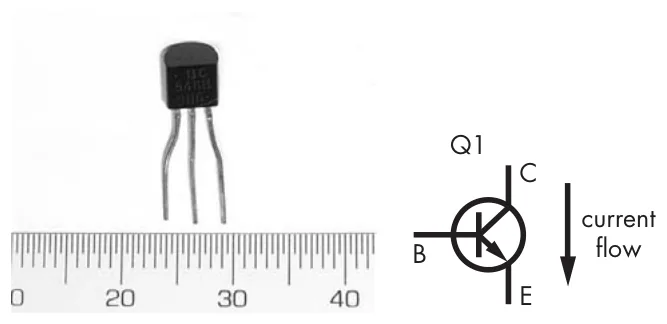
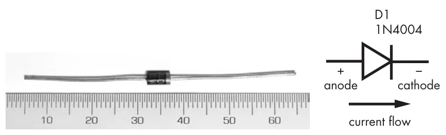
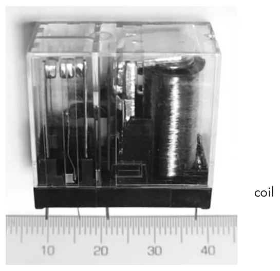

You’ll usually find it easy to plan on having a digital output control do something without taking into account how much current the control really needs to get the job done. As you create your project, remember that each digital output pin on the Arduino Uno can offer a maximum of 40 mA of current per pin and 200 mA total for all pins. Three electronic hardware components can help you increase the current-handling ability of the Arduino, however, and are discussed next.
The Transistor
Almost everyone has heard of a transistor, but most people don’t really understand how it works. In the spirit of brevity, I will keep the explanation as simple as possible. A transistor can turn on or off the flow of a much larger current than the Arduino Uno can handle. We can, however, safely control a transistor using an Arduino digital output pin. A popular example is the BC548, shown in Figure 3-16.

Similar to the LED, the transistor’s pins have a unique function and need to be connected in the proper orientation. With the flat front of the transistor facing you (as shown on the left of Figure 3-16), the pins on the BC548 are called (from left to right) collector, base, and emitter. (Note that this pin order, or pinout, is for the BC548 transistor; other transistors may be oriented differently.) When a small current is applied to the base, such as from an Arduino digital I/O pin, the larger current we want to switch enters through the collector; then it is combined with the small current from the base, and then it flows out via the emitter. When the small control current at the base is turned off, no current can flow through the transistor.
The BC548 can switch up to 100 mA of current at a maximum of 30 V—much more than the Arduino’s digital output. In projects later in the book, we will use this in other transistors, and at that time, you’ll read about transistors in more detail.
The Rectifier Diode
The diode is a very simple yet useful component that allows current to flow in one direction only. It looks a lot like a resistor, as you can see in Figure 3-17.

The projects in this book will use the 1N4004-type rectifier diode. Current flows into the diode via the anode and out through the cathode, which is marked with the ring around the diode’s body. These diodes can protect parts of the circuit against reverse current flow, but there is a price to pay: diodes also cause a drop in the voltage of around 0.7 V. The 1N4004 diode is rated to handle 1 A and 400 V, much higher than we will be using. It’s a tough, common, and low-cost diode.
The Relay
Relays are used for the same reason as transistors—to control a much larger current and voltage. A relay has the advantage of being electrically isolated from the control circuit, which allows the Arduino to switch very large currents and voltages. Isolation is sometimes necessary to protect circuits from these very large currents and voltages, which can damage an Arduino. Inside the relay is an interesting pair of items: mechanical switch contacts and a low-voltage coil of wire, as shown in Figure 3-18.

When a current is applied to the coil, the component becomes an electromagnet and attracts a bar of metal that acts just like the toggle of a switch. The magnet pulls the bar in one direction when on and lets it fall back when off, thereby turning it on or off as current is applied and removed from the coil. This movement has a distinctive “click” that you might recognize from the turn signal in older cars.